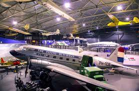
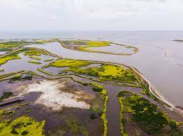

Toeristische atracties in Lelystad
Aviodrome

Maak een vlucht door de fascinerende geschiedenis van de luchtvaart. Van luchtballon tot driedekker tot straaljager. In Luchtvaartmuseum Aviodrome staan ze allemaal. Beleef boeiende en leerzame luchtvaartverhalen en –avonturen!
Kijk omhoog, ontdek meer
Luchtvaartmuseum Aviodrome is een wereld vol vliegtuigavontuur! Bij dit museum vliegt de tijd! In de expositie ‘100 jaar luchtvaart in Nederland’ kom je langs bijzondere vliegtuigen en helikopters uit de geschiedenis. Je ziet er de eerste vliegtuigen van de gebroeders Wright en Anthony Fokker, ontmoet Connie (Lockheed Constellation) en tante Ju (Junkers) en vele andere vliegende legendes. Je stapt aan boord van een echte Boeing 747 en verlaat zelfs de aarde om als astronaut een kijkje te nemen in de ruimte.
Project Marker Wadden

Marker Wadden is een groot project dat zorgt voor het natuurherstel van het Markermeer. Door de aanleg van natuureilanden met zand, klei en slib uit het Markermeer komt nieuwe natuur tot ontwikkeling. Zowel onder als boven water.
Een natuurparadijs voor vissen en vogels en een heerlijk recreatie-eiland. Met de aanleg van Marker Wadden creëren Natuurmonumenten, Rijkswaterstaat en Boskalis een robuust natuurgebied in het hart van Nederland, waar we op innovatieve wijze bouwen met en voor de natuur.
Met een eerste bijdrage van de Nationale Postcode Loterij kon dit project van start gaan.